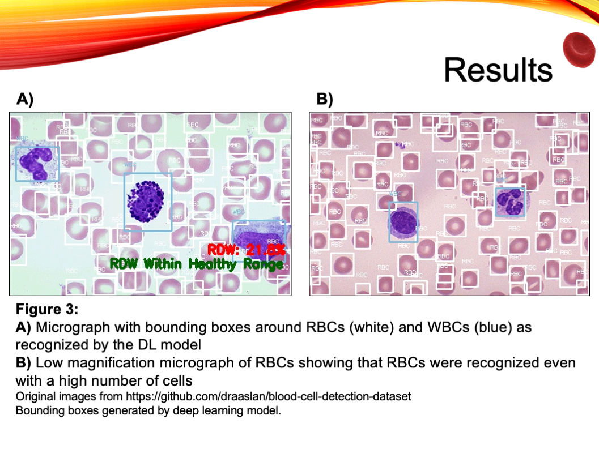
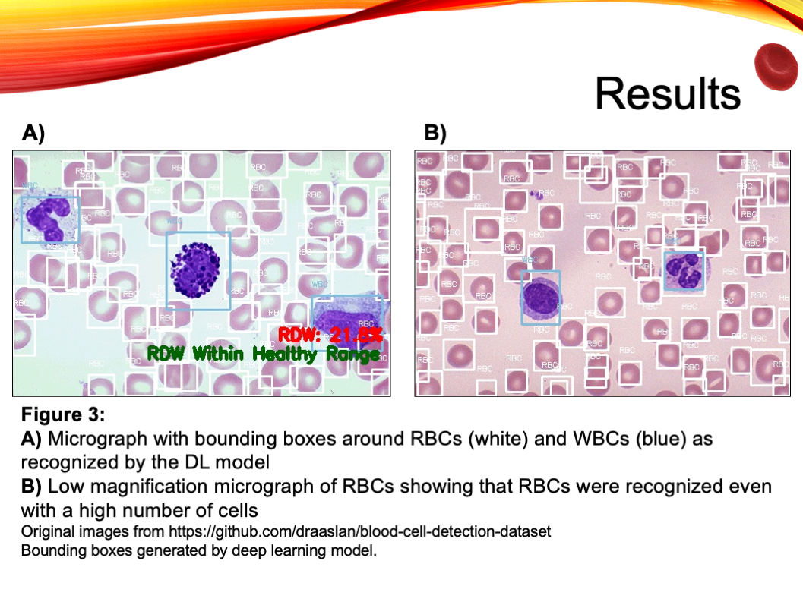

Booth Id: TMED039, Category: Translational Medical Science
Abstract: The long-term goal is to develop an automated, real time, in situ red blood cell (RBC) counting, identification, and RBC distribution width calculating system using deep learning. The aim of this work was to develop the deep learning model that can identify red blood cells. 200 images containing RBCs were annotated using Microsoft’s Visual Object Tagging Tool. Using the You Only Look Once object detection public repository and Tensorflow 1.14.0, a deep learning model was created to identify RBCs. The 200 images were used for training. The model was programmed to create a bounding box around the RBC to signify that it has been recognized. The model was tested on different images and it correctly identified an average of 6.51±3.14 RBCs per test image as compared to 7.44±3.58 that a human was able to identify (p=1.26x10-9). The model identified RBCs quite well, though not statistically as well as a human being. The computer also assigned a score for each bounding box with an average score of 60.62%±9.69%. This score represents the confidence the model had with each cell it identified. These scores were low because the quality of the images was poor. The score correlated well with the quality of the image. With more training, this model shows promise in identifying RBCs. After further training, this model will be used to identify RBCs in videos. Finally, it will be programmed to measure the RBC diameter and calculate RDW.


 
